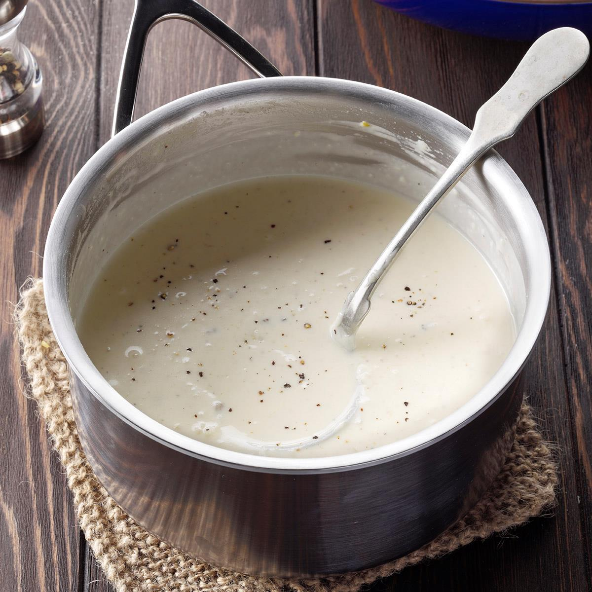

Check out my recipe for a Quick and Easy Alfredo Sauce

Description
This is a family recipe that has been passed down from Allrecipe to me and my family.
Every time we make this recipe, there are never any leftovers. It is simply delicious and we all want more!
After you make this recipe you will want to keep making it because it is simply so delicious!
Please comment and leave a rating so we know what you think!
Ingredients
- ½ cup butter
- 1 (8 ounce) package cream cheese
- 2 teaspoons garlic powder
- 2 cups milk
- 6 ounces grated Parmesan cheese
- ⅛ teaspoon ground black pepper
Directions
- Gather all ingredients.
- Melt butter in a medium, non-stick saucepan over medium heat. Add cream cheese and garlic powder, stirring with a wire whisk until smooth. Add milk, a little at a time, whisking to smooth out lumps. Stir in Parmesan cheese and pepper.
- Remove from heat when sauce reaches desired consistency. Sauce will thicken rapidly. Thin with milk if cooked too long.
- Toss with hot pasta to serve.
Go Home